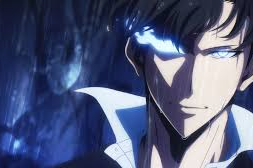
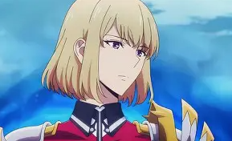
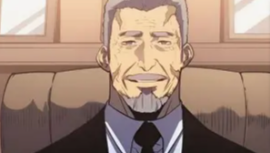
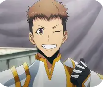

CHARACTERS
- Sung Jin-Woo: The protagonist of the series, a weak hunter who becomes stronger after gaining the ability to level up.
- Cha Hae-In: A skilled hunter and member of the Hunter's Association who becomes an ally to Sung Jin-Woo.
- Go Gun-Hee: The chairman of the Hunter's Association who recognizes Sung Jin-Woo's potential and supports him.
- Yoo Jin-Ho: A loyal friend and fellow hunter who accompanies Sung Jin-Woo on his journey.



